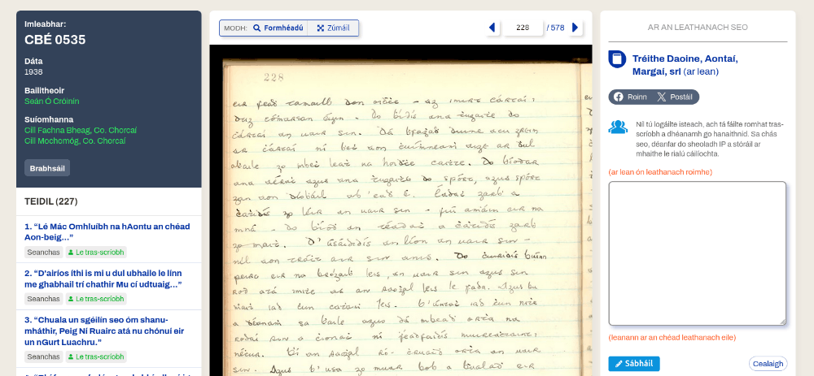
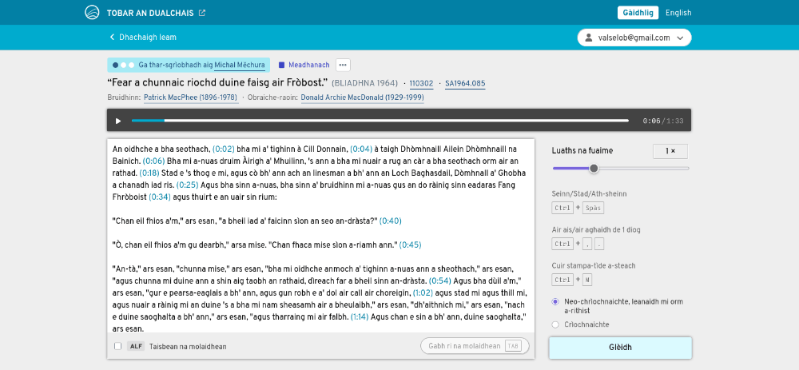

These are the lessons I’ve learned from building crowdsourcing websites.
In digital humanities we often find ourselves digitising old stuff which we need to transcribe, such as sound recordings and handwritten text. Transcribing such things is hard, so we sometimes turn to crowdsourcing to do it. In this article I am going to tell you about two projects I’ve been involved in where transcription has been crowdsourced, and share a few lessons I’ve learned which I believe are transferrable and universally valid.
What is crowdsourcing? But first, what is crowdsourcing? It’s when you need something done but, instead of doing it yourself or paying somebody to do it or automating it, you ask volunteers from the general public to do it for free. That may sound like a crazy idea, why would people work for free? But it turns out that, if it’s for a good cause and if all the details are configured correctly, people out there are generally happy and willing to contribute time and effort.
I have had the honour of being involved as a tech guy in several such projects where volunteers were invited to transcribe folkloristic material and where it has worked out well: lots of volunteers chipped in, everybody did a small amount of work and, because it was a lot of people, a lot of work got done in the end.
Example 1. The first is Dúchas.ie, a website where you can browse digitised content from Ireland’s National Folklore Collection. Much of the content is scanned pages of handwritten text. There is a feature on the website where, if you see a scanned page that hasn’t been transcribed yet, you can open up a textbox, transcribe it yourself, and click a button to submit your transcription.

After you have submitted a transcription it goes through a process where it is checked by internal editorial staff and either accepted or rejected, and if accepted, it appears on the website. People can submit transcriptions completely anonymously (without logging in) or they can create an account and submit transcriptions under their own name or nickname. The crowdsourcing feature on Dúchas.ie has been extremely popular, volunteers have transcribed hundreds of thousands of pages in both languages (Irish and English) since its launch in 2015 and it’s still going.
Example 2. My second example is a smaller website called Fosgladh an Tobair (Scottish Gaelic for ‘Opening the Well’). This is a website where volunteers are being invited to transcribe archival recordings of people speaking Scottish Gaelic. To participate you have to create an account and log in. You see a list of recordings that have not been transcribed yet, you select one that interests you, and you will get a text box into which you can transcribe what you hear. Submitted transcriptions go through a vetting process (similar to Dúchas.ie) and, once approved, will appear on the website.

At this point you may have a lot of questions about these projects, their background, their editorial policies and so on. Those aspects have been described plentifully elsewhere. The angle I want to take here is that of a website developer, a user interface designer, a technical architect: someone whose job is to actually make it happen on people’s screens. Let’s say you’re thinking of starting a crowdsourcing project of your own – what are the most important things you should pay attention to? Here are my six golden rules of crowdsourcing in digital humanities.
The job you are asking members of the public to do (such as transcribing stuff) must be something meaningful and worthy, something that gives people a (real, non-fake) sense of purpose. If people are going to be working for free, then they won’t want to work for you, they’ll want to work for society. Think of what motivates people to volunteer in general. Producing transcriptions of folklore which everybody can then enjoy is probably a good motivation for altruism, while transcribing (for example) internal meeting minutes of some company is not.
This is a very important point so let me restate it. The task you are asking volunteers to do must be something which makes a difference, something which has a positive impact on society or on some subset of it, something which gives the volunteers a (justified) sense of satisfaction. If you can’t confidently explain how your task has those qualities, then maybe crowdsourcing isn’t a good recipe for getting the task done and maybe you should reconsider before you end up investing in a crowdsourcing platform with no crowd.
Related to that is the question, who owns the product of the work, copyright-wise? People won’t be keen on contributing to your project if they know that you will end up owning the copyright on everything and that only you will be allowed to use the content, commercially or otherwise. They’d truly be working for you for free then, wouldn’t they? On the other hand, you don’t want each individual contributor to own the copyright for their contribution because then you’d end up with thousands of copyright holders to deal with for every future reuse of the content.
The only reasonable solution is for all to agree that the content will be licenced under a copyleft licence such as a Creative Commons one (preferably the least restrictive one, CC-BY). This effectively means that the product of crowdsourcing will become public-domain-like, with everybody (including yourself) able to use it for any purpose whatsoever without having to ask anyone for permission.
This is why, when signing up for an account on Fosgladh an Tobair, there is a checkbox where you have to agree that all your future transcriptions will be available to the world under CC-BY. This, when you think about it, is the only sensible way to deal with copyright issues in crowdsourced content. Wikipedia has been doing it like this from the very beginning, so it has to be good.
The task you are asking volunteers to do has to be simple and easily doable, even for someone who is not an expert in that subject. The more you can simplify the assignment the better. On the two crowdsourcing websites I’ve mentioned we simply ask people to transcribe what they think they hear or see, as honestly as possible, without worrying too much about spelling, dialects or transcription guidelines. What we get from the volunteers is basically raw material and we have internal staff on standby to check and clean everything up afterwards.
There is a trade-off to be made here. The more you simplify the task, the more internal effort you’re going to need for checking and cleaning up. On the other hand, the more expertise and skill you expect from the volunteers, the fewer people will bother signing up. I would advise to err on the side of simplicity. It’s called crowdsourcing for a reason, you need a crowd, not a cabal.
It helps to have in your mind a couple of imaginary personas to represent the typical volunteers you are targeting: perhaps a school teacher in a school somewhere, somebody living in a small town somewhere with an interest in local history, a university student of Irish looking for practice reading older texts, a distant relative of the person whose words are being transcribed, something like that. If you expect your personas to have a university degree in some specific subject or previous experience in something uncommon, then you are probably over-constraining it.
The tasks need to be short. It should not take the volunteer half a day to do one piece of work. Ideally it should be possible to start and finish each task within the space of a few minutes: you come in, you do whatever needs to be done (for example transcribe a few sentences), you hit ‘Submit’ and you’re done, at which point you can decide to move on to the next task or not, depending on how you feel.
Long tasks are more likely to be abandoned and and are less likely to encourage volunteers to return. Short tasks, on the other hand, give you an instant kick of satisfaction and can be a motivator to come back for more.
This is a lesson I have learned the hard way. In Fosgladh an Tobair I think we overdid it with how long it takes to do the transcriptions. Some sound recordings are so long it takes hours to wade through them, and we expect volunteers to do them in an all-or-nothing fashion: either you have transcribed the whole thing or you haven’t transcribed anything. I am not proud of the fact that I hadn’t recognised this potential problem in time. If the project has still turned out to be a success then it’s in spite of this, and only shows how dedicated and hardcore the volunteer community really is. Ideally we should have split the recordings into shorter chunks (although how?) and ask volunteers to have a go at those instead, but that’s now a suggestion for version 2.0.
Of course you don’t need to be reminded that the user interface you’re building for your volunteer contributors should be user-friendly. But what does that actually entail?
On Fosgladh an Tobair, I had looked for inspiration from other software tools that already existed to assist people in transcribing speech. Some of the tools I’ve seen are pretty complicated and you have to learn them first. One tool I saw even expected that you had foot pedals under your desk to control the playback while your hands are free to type: a neat idea, I’m sure professional transcribers can have that kind of equipment in their offices, but totally not suitable for an army of volunteers working from home or wherever. The thing is, most software that exists in this sphere is pitched at professionals who do this work as their job and are willing to invest time into learning the tool.
That’s not the target audience we’re aiming at here though. For crowdsourcing, the target audience is non-professionals who are keen to get some work done straight away. You can’t force them to watch a two-hour training video first, that’ll just lead to people dropping off before they’ve even started. You really need to go out of your way to design the user interface so that it requires as little learning as possible. Which can be easy or difficult, depending on the nature of the task. On Dúchas.ie (= transcribing handwritten text) this is a no-brainer, we simply provide a textbox where people type what they see. On Fosgladh an Tobair (= transcribing speech) this is a much bigger challenge. Speech-to-text transcription is a completely different beast from image-to-text transcription because you have to multitask a lot: you have to control the sound playback (starting, stopping, rewinding, replaying...) and simultaneously you have to type what you’re hearing. Juggling these two modalities at the same time is hard with just one pair of hands (which is why some tools have foot pedals) but I believe that what we came up with eventually is as easy-to-use as it gets. The transcription interface we have on Fosgladh an Tobair, while it probably isn’t completely leap-in-and-swim (we do encourage new volunteers to read through a short Guide for transcribers first), it is usable even for first-timers who haven’t done this kind of work before. I’m reasonably sure of this because we tested it on people before it went public.
So, let me repeat: your job as a user interface designer for a crowdsourcing project is to build something non-specialists can use with (almost) no training. The more you succeed at this, the more volunteers you are going to recruit and retain, and vice versa. And it’s definitely true that not all tasks lend themselves equally easily to such simplification. Some tasks genuinely cannot be performed by non-specialists without a lot of prior training, and those are simply not suitable for crowdsourcing. For those that are, good interface design is one of the keys to success.
Last but not least, it’s a good idea to build features into your crowdsourcing platform which let people take pride in the work they have done. While some volunteers wish to contribute anonymously, most people are not like that. If they’re working for free then at least they’ll want to get some social capital from their work. Let them!
How do you do this? Build features to let people show off their skills and the work they have done. On the crowdsourcing websites I’ve mentioned, our volunteers have profile pages which they can populate with their name (real or nick), a blurb about themselves, links to themselves on social networks and other info like that. Their contributions are linked to their profile and always clearly attributed with their chosen name or nickname.
On Fosgladh an Tobair we went further and created a leaderboard-style page where you can see who the most active contributors are. This introduces an aspect of competitiveness into the system, which is a game you need to play carefully: you don’t want to pitch the volunteers against one another, do you? Any hint of competition needs to be good-natured and not too in-your-face. In the end, crowdsourcing is about people coming together for a shared purpose, your job as a website builder is to encourage that to happen.
So... This brings us to the end of my six golden rules of crowdsourcing in digital humanities. When you think about it, crowdsourcing is a technique for achieving miracles. You begin with a big job which seems impossibly large but then, you subdivide it into lots of smaller jobs, you invite a crowd of volunteers and voilà, it’s done! Plus, when you crowdsource, you’re not just building some technology and producing some content, you’re also accidentally building a community – and isn’t that a side-effect worth coding for?